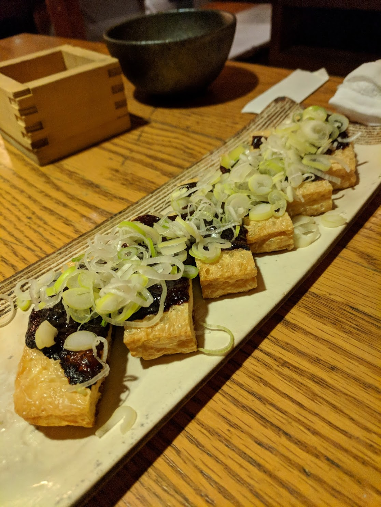
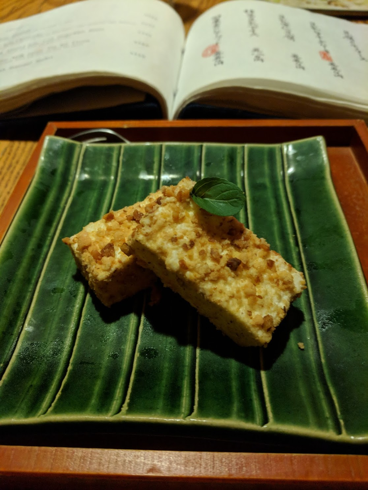
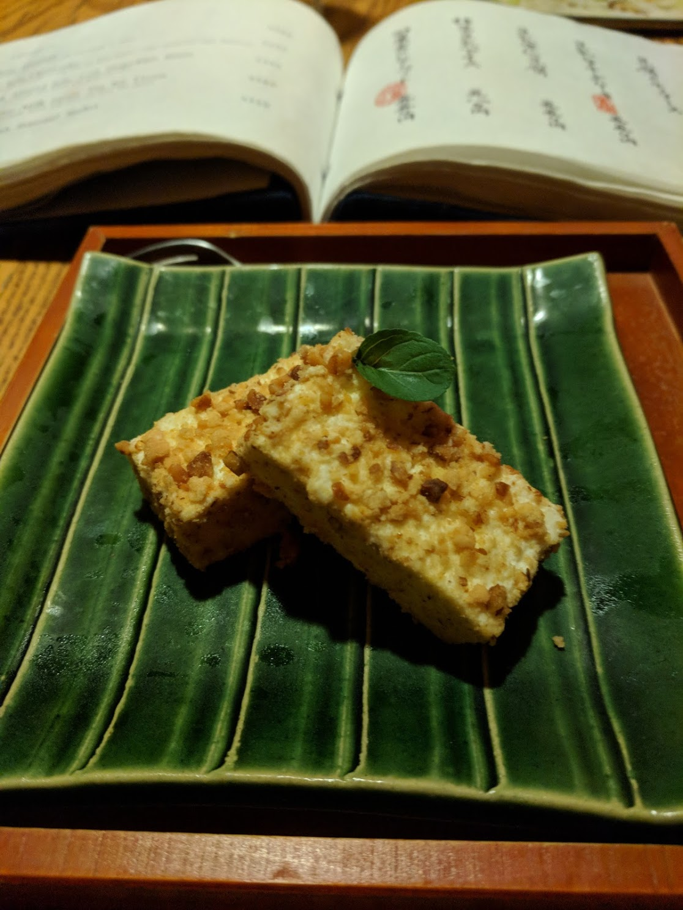
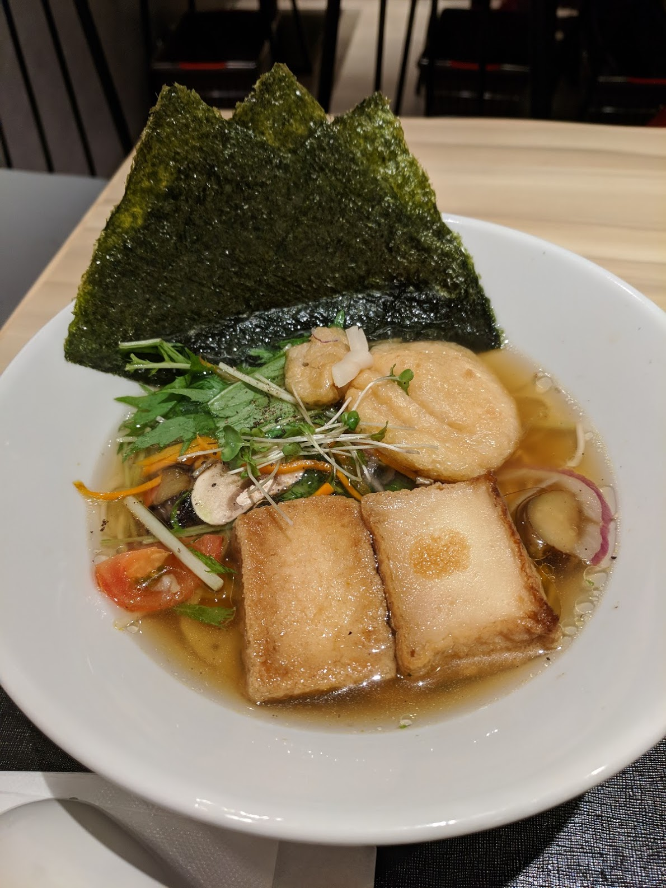
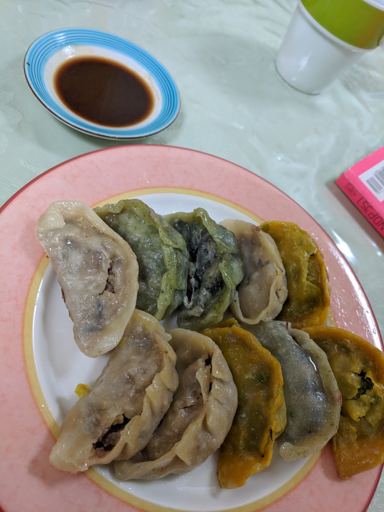
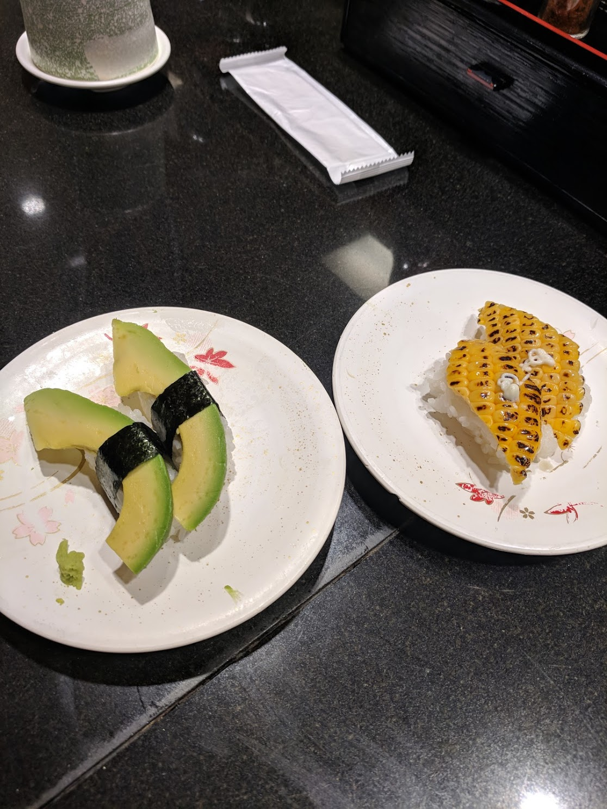
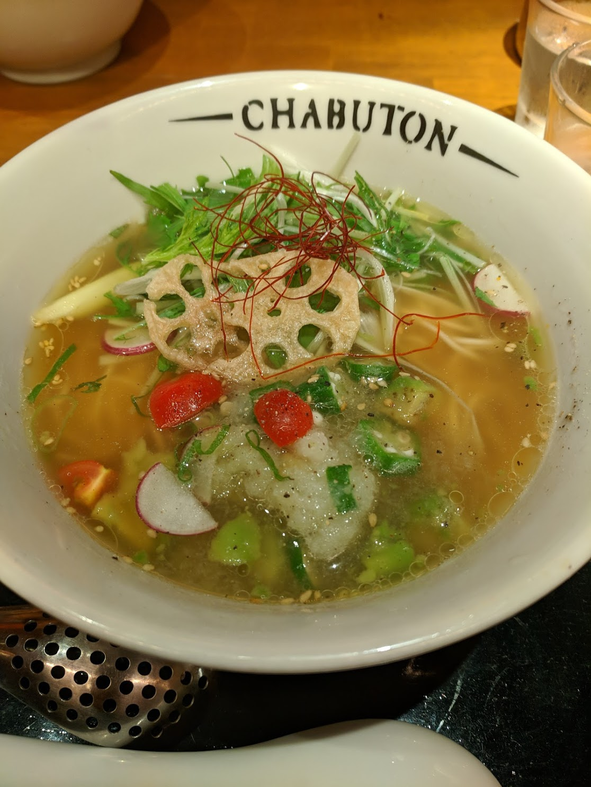
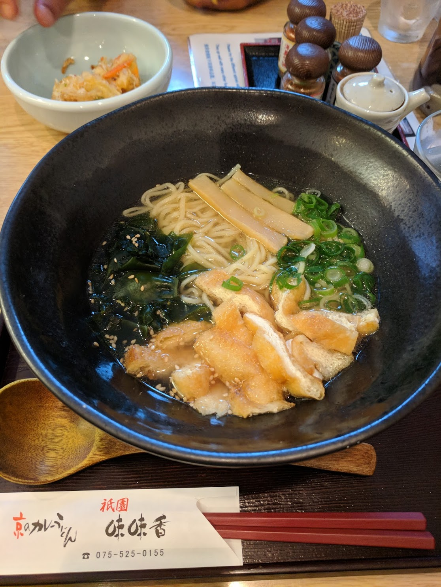

Notes: use the HappyCow app/website to find vegetarian/vegan friendly restaurants. Prices listed are in JPY. Most restaurants listed are in Tokyo and the location includes what district they are near. Convenience stores: get onigiri, which is rice balls with some filling. The pickled-plum onigiri are vegan friendly.
Tonkotsu was favorite, black sesame was eh, white sesame was good, shoyu was eh, gyoza was only good at T's restaurant. 800-1200 depending on which ramen and appetizer


T's Restaurant Happy Cow T's Tantan Tokyo Station Happy Cow T's Tantan Ueno Station Happy Cow
Pretty good ramen, soy sauce based. ~1000

Ikebukero Happy Cow Ginza Happy Cow
Need a reservation, but I just bugged them enough about making one several weeks in the future that they seated me immediately. Tofu cheesecake was a game-changer, but I'm still salty they didn't take me seriously when I tried to get a table.
  

Alright ramen, but pretty busy and maybe not worth waiting. Happy Cow
Ramen wasn't my favorite but lots of other options. ~1200

DO NOT GO. salt-ramen that tastes like noodles in salty water. Saw huge roach at end of meal. 900+100 upsize

Menu is clearly marked, and indicates that even vegetarian option has noodles made with eggs. Not great compared to Tokyo/Japan, but probably best you'll get in airport.

Awesome build your own veggie burger. Order with pineapple and you'll get a thicc slice of grilled pineapple that really pulls the burger together.
Vegetarian black bean gyoza in a hole-in-the-wall. Good experience, but not highly recommended. Little under 1000 for 8-10 pieces of gyoza.

Google Maps and Happy Cow
Upscale izakaya has heavenly walnut dressing soba noodles. ~900, but might also get charged a ~400 cover that includes edmame if you don't eat at bar. Izakaya is on top floor, near a photograph shop.

https://hibiya-central-market.jp/about/
Things at Taco Bell can be made vegetarian, but they don't use beans it's just Mexican rice. It is not fast food so much as it is fast casual. ~650 got a burrito
Hard to go wrong, but also hard to find standout restaurants. Use HappyCow to find the nearest Indian restaurant for convenience to get typical north indian food (surprisingly good naan, curries are mostly sauce with little paneer/vegetables)
Conveyor belt sushi that is english and vegetarian/vegan friendly! Sushi has options like avacado, corn, cucumber, natto, radish (100 per plate). Also avacado tempura (250 per plate). Two of everything vegetarian cost about ~2000 which is enough to feed a small meal to four people. Can get busy, but we accidentally went right before closing so it wasn't busy at all.

Burger restaurant. Not great, but not bad. Happy Cow
Good mediterranean food!

Sit-down mexican restaurant. Not bad, not iconic.
Soy milk based ramen, but ambience was too authentic (no AC 😓) (960)

Lots of vegetables in ramen, gyoza was good too (~1000 for gyoza + ramen)

Nine different noodle options. Ranked: udon (awesome, def make sure you get it with tempura), then ramen (pretty good, but doesn't come with tempura so get that on the side), then curry (skip the curry versions, they're basically Maggi)
 

Good ambiance, definitely worth checking out when in Izu.